Clawford was born beneath a small music shop in the old town of Bramblewick. The shop was called The Crooked Bridge, although its sign had hung slightly sideways for so many years that nobody remembered whether the name came before or after the crookedness.
Clawford belonged to a large family of ferrets who made their home between the shop’s floorboards. Like most ferrets, they were expert explorers, collectors, climbers, and discoverers of objects that other creatures had carelessly left unattended. Clawford’s family collected buttons, ribbons, loose screws, pencil stubs, and the occasional sandwich.
Clawford collected sounds.
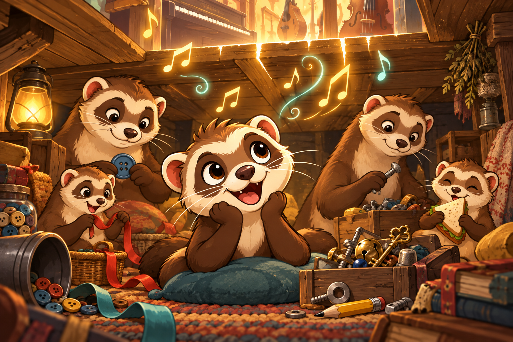
He listened to the instruments being played above him and learned to recognize them through the floor. He knew the heavy tread of a piano, the bright chatter of a mandolin, and the long wooden sigh of a cello. His favorite sound, however, came from an old open-back banjo hanging near the rear of the shop.
It was loud, cheerful, and just a little unruly.
Clawford understood it immediately.
The first note
At night, after the shop had closed, he would climb through a gap beside the radiator and investigate the instruments. He never meant to cause trouble, but trouble often found him anyway. One evening he plucked a banjo string, startled himself, fell into a basket of sheet music, and brought half the display down with him.
The shopkeeper, Mara Bell, discovered him sitting in the wreckage with one paw resting on the banjo.
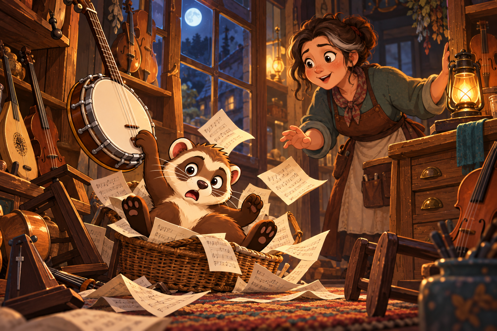
Instead of throwing him out, Mara asked, “Were you trying to play that?”
Clawford nodded.
Mara placed the banjo on the floor and showed him a G chord.
That single chord changed his life.
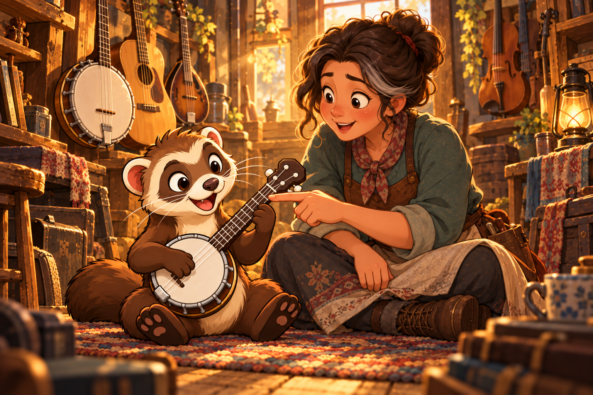
The instrument was far too large for him, so Mara found a little travel banjo that had been gathering dust in the workshop. She shortened its strap, replaced its stiff strings, and gave it to Clawford on one condition: he had to practice somewhere other than directly beneath her bedroom.
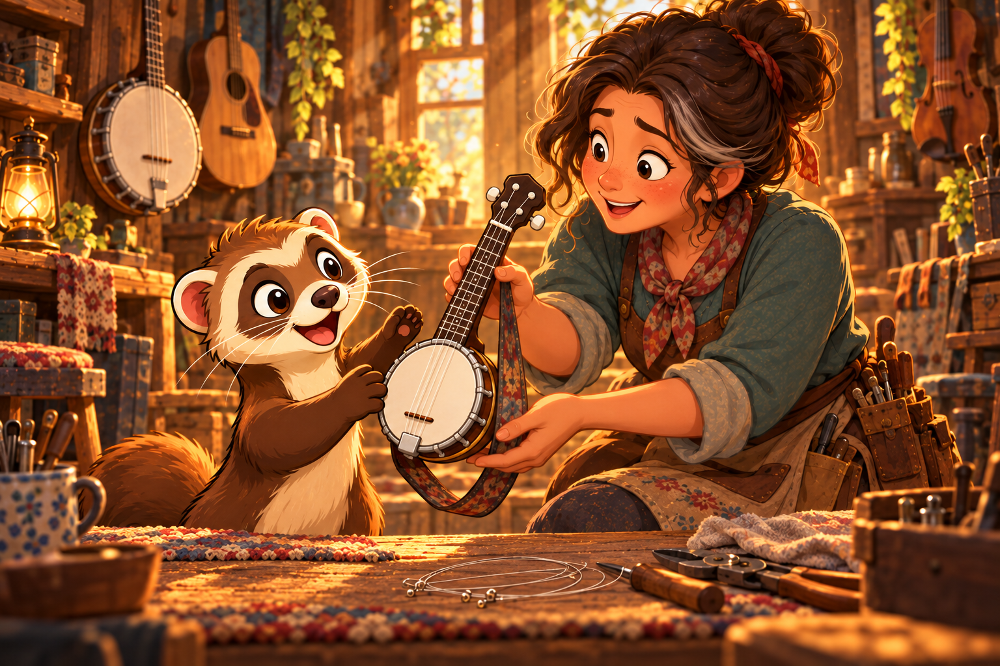
Clawford agreed, although his understanding of “somewhere else” remained flexible.
Maps for music
At first, learning was difficult. His paws were small, the fifth string seemed to begin wherever it pleased, and the dots on the printed diagrams never looked quite like the fretboard in front of him. Teachers would say things like “play the next G” without explaining which G they meant or where it was hiding.
So Clawford began drawing maps.
He marked every string, fret, and note he could find. He used different colors for scales and circled useful chord shapes. Whenever he discovered that the same note could be played in several places, he drew little paths between them.
Before long, his walls were covered in fretboard diagrams.
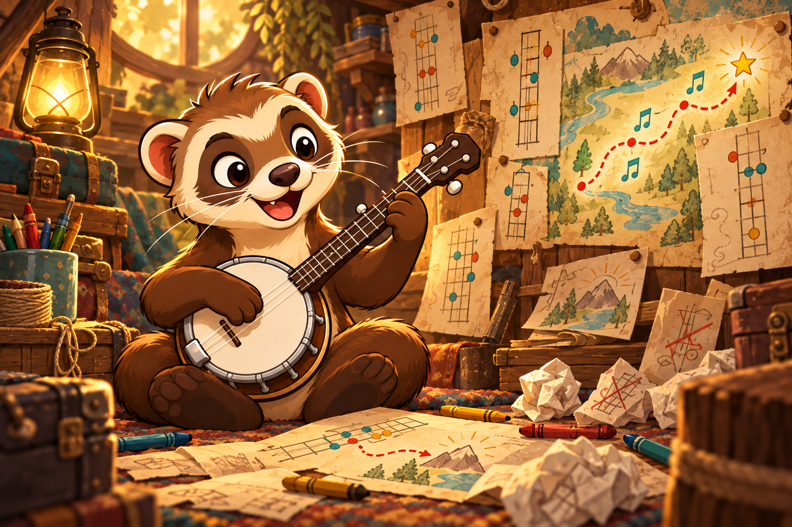
Clawford did not learn music in a straight line. He investigated it. He crawled through it, looked behind it, turned it upside down, and occasionally misplaced part of it beneath a cupboard. A new tuning was not merely a different arrangement of pitches; it was an unexplored tunnel.
Open G became his comfortable home. Double C was a wide valley with interesting echoes. Sawmill tuning sounded mysterious enough that Clawford became convinced it contained a secret. He has been looking for that secret ever since.
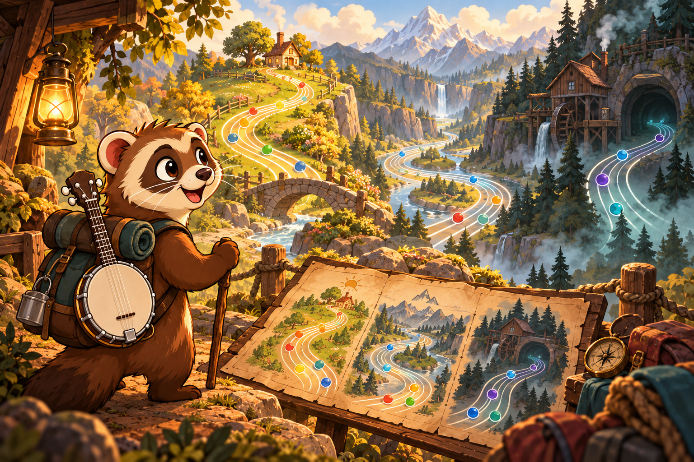
Unexpected improvisations
His first public performance happened by accident.
Bramblewick’s banjo player failed to arrive for the annual harvest dance, and the dancers were growing restless. Mara jokingly suggested that Clawford could fill in. Before she could explain that she was not serious, he had climbed onto the stage.
Clawford knew only three complete tunes.
He played all three.
Then he played them again, faster.
During the final tune, he missed a note, found a better one, and followed it into a melody nobody had heard before. The dancers kept dancing, the audience began clapping, and Clawford discovered that a mistake did not always mean the music had stopped going in the right direction.
He has called wrong notes “unexpected improvisations” ever since.
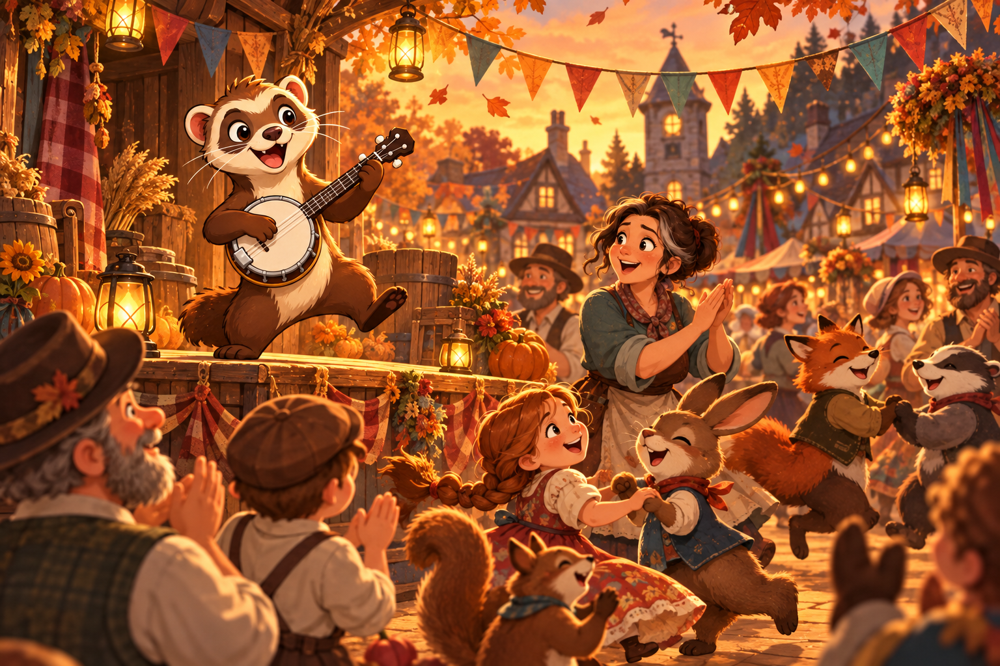
A map for everyone
After the harvest dance, animals and people began visiting The Crooked Bridge to hear the tiny banjo player. Some were experienced musicians, but Clawford especially enjoyed meeting beginners. He remembered how confusing the fretboard had once seemed and refused to pretend that music was a secret reserved for experts.
When someone could not find a note, Clawford drew them a map.
When someone struggled with a chord, he found another shape.
When someone played a wrong note, he listened to where it wanted to go.
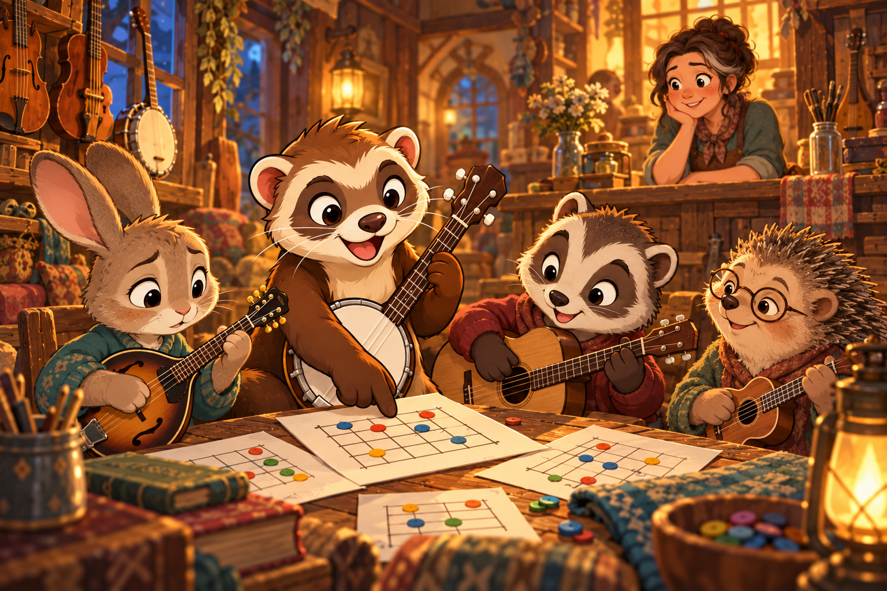
The long way around
Eventually, Clawford packed his diagrams, spare strings, three picks, and eight emergency snacks into a battered banjo case. He left Bramblewick to travel in search of unfamiliar songs, unusual instruments, and new ways of arranging notes.
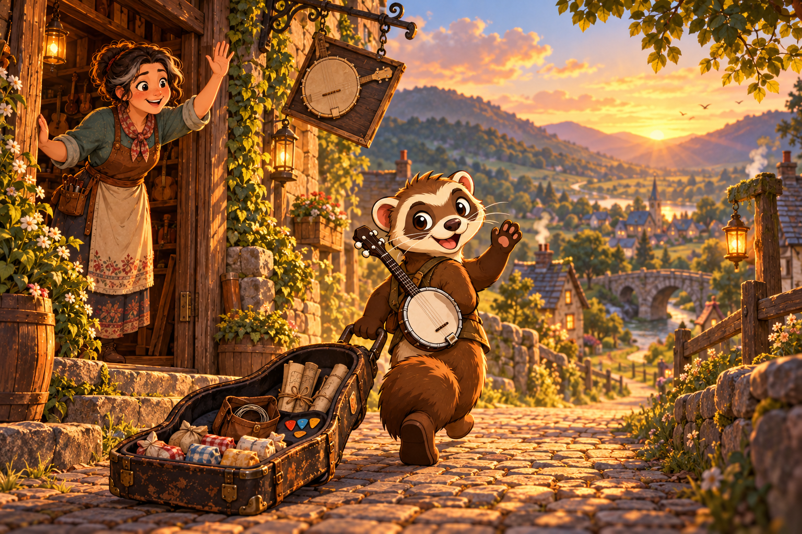
He played with fiddlers in crowded kitchens,
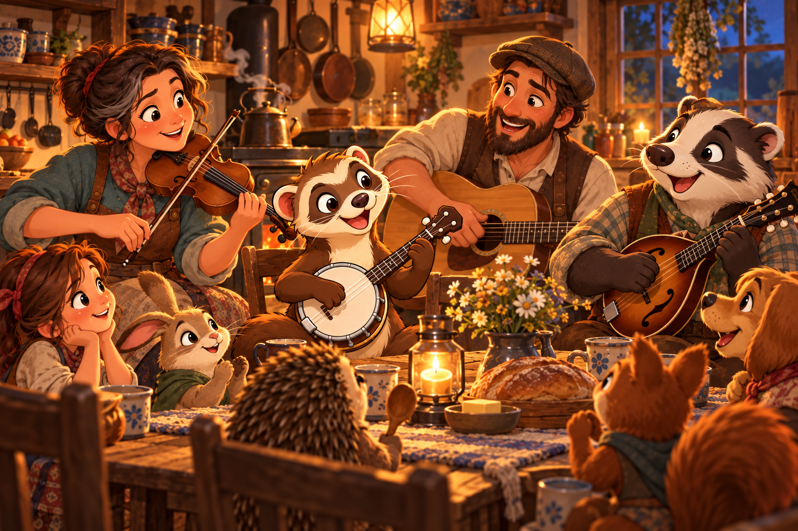
guitarists beside campfires, and mandolin players who insisted that eight strings were perfectly reasonable. He learned that every instrument had its own geography. A note might be simple to find on one fretboard and hide in several places on another.
His collection of maps grew.
Unfortunately, so did the number of maps he misplaced.
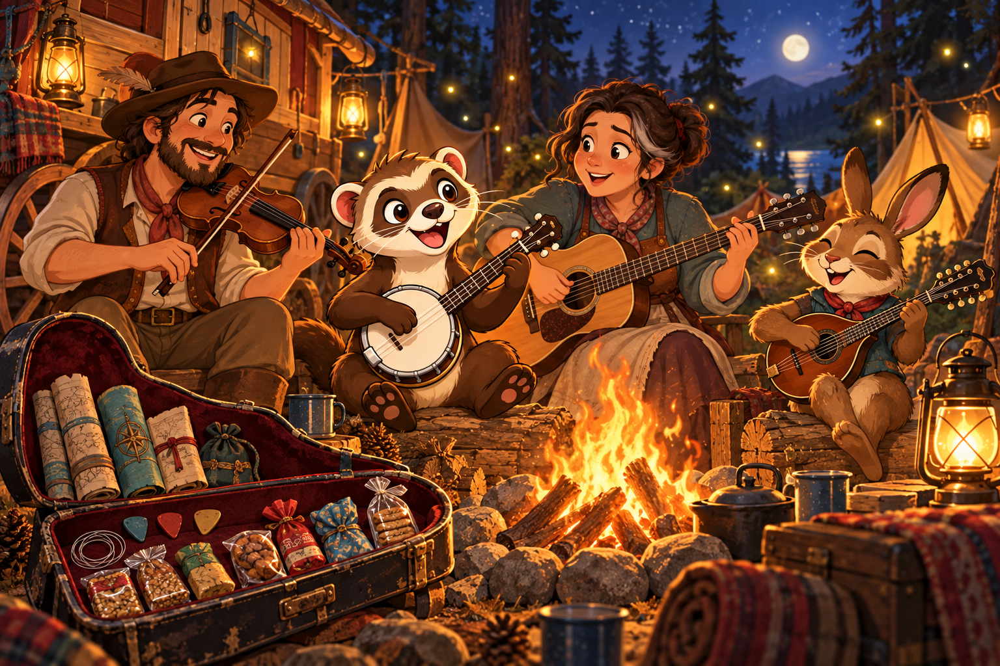
The atlas
Clawford needed a better system—one that could remember every instrument, tuning, key, scale, chord, string, and fret without covering an entire music shop in paper. With Mara’s help, he began organizing his discoveries into an interactive musical atlas.
That atlas became Clawford.
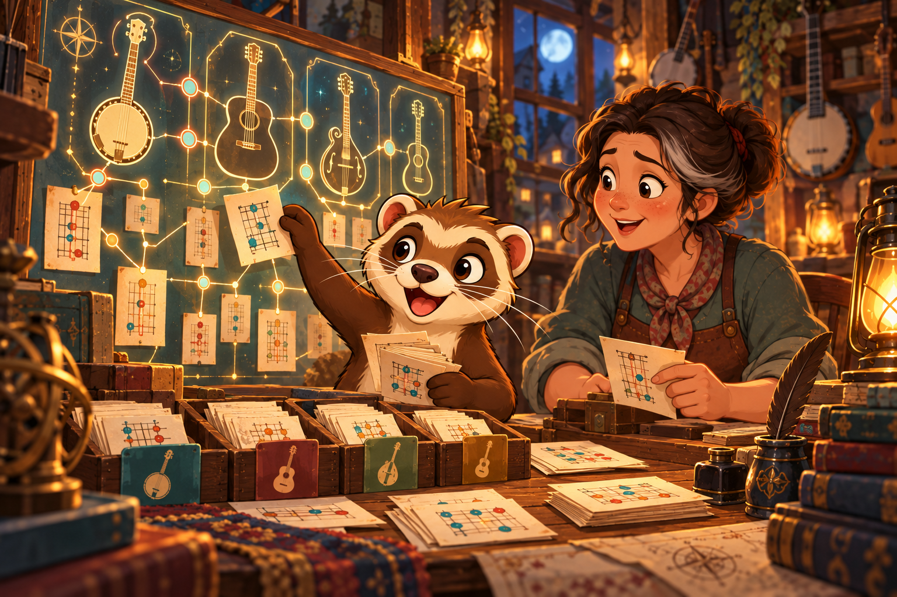
Today, Clawford serves as its guide, caretaker, and enthusiastic chief investigator. He helps musicians discover where notes can be played and how those notes connect across a fretboard. He still prefers the banjo, but he is fascinated by every fretted instrument and insists that there is always room in the case for one more tuning.
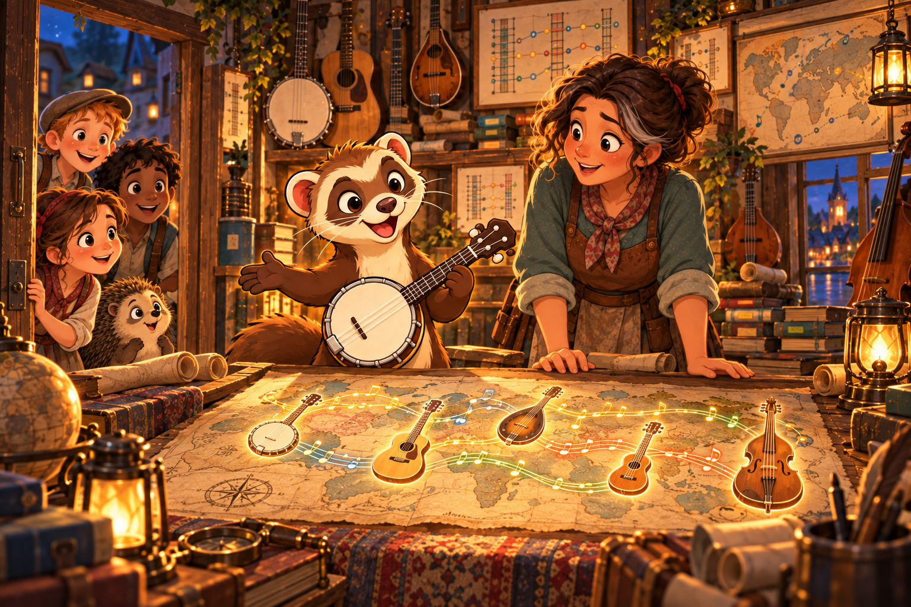
Clawford is endlessly curious, cheerfully persistent, and occasionally distractible. He takes music seriously but does not believe musicians must take themselves seriously. He likes clear diagrams, open strings, strong rhythms, and tunes with enough space for a little mischief.
He dislikes gatekeeping, unexplained terminology, and discovering that somebody has moved his capo.
The perfect chord
Clawford’s greatest ambition is to find the legendary perfect chord. According to him, it is warm but bright, surprising but familiar, and powerful enough to make every creature in the room stop and listen.
He has searched thousands of frets without finding it.
Lately, however, Clawford has begun to suspect that the perfect chord may not be a fixed collection of notes. It might simply be the right chord, played at the right moment, with the right companions listening.
He continues searching anyway.
After all, there are still plenty of fretboards left to explore—and Clawford never leaves a musical tunnel unexplored.
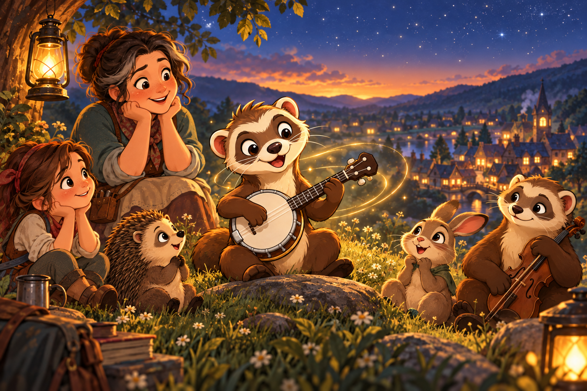